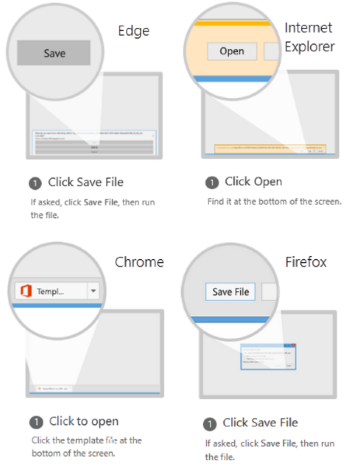

Thanks for using Open Work Items in Power BI extension.
For feedback and support please refer to the project website.
This extension requires Microsoft Power BI Desktop October 2017 (or later) to be installed locally to open template files (*.pbit).
Your file will be available for download.

This dialog will close in seconds... cancel